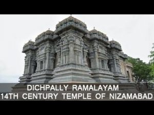
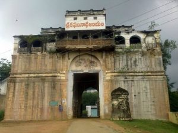
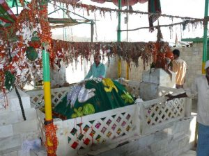
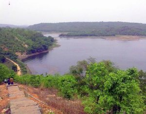
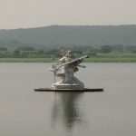

Induru Information
Induru Information  The Dichpally Ramalayam located at a distance of 20 k.m. from Nizamabad enroute Hyderabad. The temple was built in the 14th century by Kakatiya Kings, the Dichpally Ramalayam is the one of the oldest temple in the Nizamabad. Temple was built of black and white basalt stone, with the finest architecture and excellent craftsmanship of goddesses, animals, devils and Khajuraho style erotic structures on it. This ancient temple has awesome sculpture with extremely beautiful carvings on temple walls, ceilings, pillars, and door frames. This temple has 105 steps and a pedestrian subway connecting it to Raghunadha Temple in the Nizamabad urban center.The temple is visited by thousands of devotees on the festival Sri Rama Navami.. The Dichpally Ramalayam is one of the finest example of stone architecture, built in white and black Basalt stone. The entrance to the steps is grased by a decorative gateway “ Keerthi Thorana” which is reachly engraved and bearing the Kakatitya style of architecture. The Surrounds area of the temple fills with water every year during the monsoons and the temple assumes the look of an island.
Nizamabad fort, also known as Nizamabad of quilla, was built in tenth century by Rashtrakuta Kings situated at south west of Nizamabad city. The fort has a large area surrounded by Masonry walls and huge bastions resembling Muslim architecture.Raghunatha temple is on the top of the fort and is a major tourist attraction. Believed to have been built by Chatrapathi Shivaji. The temple temple has spacious halls spread over an area of 3900 square fees with unique system of ventilation that keeps it cool in summer in particular. There is a prison within this fort premises where “Dasharathi Krishnamacharyalu” a legendary poet and writer spent his life during initial year of independence. The time he spent in this jail was well utilized in writing poetry. His famous quote “Naa Telangana Koti Rathanala Veena” has been and is being used right from the initial periods of Telangana oribation till date.
 Sri Navanatha Siddeshwara temple is located in Armoor town about 27 K.m. Northeast at Nizamabad district. There are beautiful rock formation around this temple with extends up to 2 K.m. legend says that, on this hillock and hence it is called as Navanathapura. There are many temples on the hillock namely Shivalayam, Ramalayam, Hanuma Temple, Durga Devi Temple and all these temples are believed to be Swayambhu Temples.Inside these caves is a Shiva Temple, where the Shiva Lingam is said to be swaymbhu or self-manifested.The entrance to this cave temple is a door that is barely three feet.Just outside the exit point of this narrow cave is a Ramalayam and the temple tank, Jeeva Koneru.Fifteen years ago a ghat road was built through the rock formation, leading straight to Siddulagutta. There is also a walkway from the Gol Bungalow for pilgrims wishing to do the climb up to the temple by foot.
Sri Navanatha Siddeshwara temple is located in Armoor town about 27 K.m. Northeast at Nizamabad district. There are beautiful rock formation around this temple with extends up to 2 K.m. legend says that, on this hillock and hence it is called as Navanathapura. There are many temples on the hillock namely Shivalayam, Ramalayam, Hanuma Temple, Durga Devi Temple and all these temples are believed to be Swayambhu Temples.Inside these caves is a Shiva Temple, where the Shiva Lingam is said to be swaymbhu or self-manifested.The entrance to this cave temple is a door that is barely three feet.Just outside the exit point of this narrow cave is a Ramalayam and the temple tank, Jeeva Koneru.Fifteen years ago a ghat road was built through the rock formation, leading straight to Siddulagutta. There is also a walkway from the Gol Bungalow for pilgrims wishing to do the climb up to the temple by foot.
Badapahad Dargah or Peddagutta is a Muslim Pilgrim Centers. Built in the memory of the Saint Hazrat Syed Sadullah Hussain, the mosque is situated atop a hillock near Jakora in the Varni Mandal of Nizamabad district. Many Muslim devotees as well as Hindu devotees climb hill and visit Saint Sadullah Hussain Baba.The three annual festival of Ursu at Badapahad is held every year in September month. Telangana, Andhrapradesh, Maharashtra and Karnatak people attend this occasion and festival in every year.Dargah is located between the hills of Chandur and Varni,the Bada Pahad Dargah site is also used as a huge ropeway project. The ropeway will also be used as a mode of transport to access the mosque. There are around 1000 steps to reach the summit of the hill where Dargah is located. Bada Pahad Dargah is Located in Bada pahad village, about 15 k.m from varni and 43 k.m from Nizamabad. Situated on the huge hill (Bada Pahad), this prominent Dargah is visited by scores of devotees every year from the neighboring districts and states.
Ali sagar reservoir located in jankampet village. Yedlapally Mandal 2 km off the Nizamabad – Basar road, is a scenic water body with a vast alluring garden developed by Nizam of Hyderabad. The park spreads over 33 acres enriched with fountains and colorful profusion of flowering plants, an enchanting summer house well laid out gardents, an island and hilltop guest house thus making it a favored getaway. These exists a deer park, facilities for trekking and water sports which are additional attractions nestled at the destination.Ali Sagar is a very important picnic spot near Nizamabad. Ali Sagar in simple words is a very colorful and beautiful garden developed to attract picnickers from Nizamabad.
Ashok Sagar is located at janakampet village,yedpally mandal at a distance of about 7 k.m from Nizamabad and 26 k.m from Basara.This is situated on the route to the Famous saraswathi temple at basar from Hyderabad. It is a huge reservoir comprising of a beautiful Rock garden, octagonal Shaped restaurant, swinging bridge, boating facilities and children park. The garden is spread over an area of 2 acres with beautiful landscape and attractive natural setting rock cuts. There exists a 15 ft marble statue of Goddesses saraswathi in the middle of the water. The lake is scenic with a backdrop of hilly landscapes. Boating facility is available at the lake as well, and the rock garden itself makes for some fascinating viewing in a couple of spots. Landscaped rock garden with winding path in the midst of rocks gives a memorable experience to the visitors.